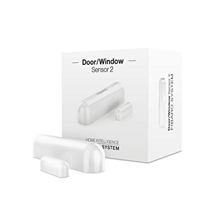

Existen diversos sensores los cuales tienen una importancia fundamental en cualquier casa inteligente. Estos sensores son dispositivos de entrada qué se encargaran de proveer la información a la casa para tomar decisiones como cerrar una ventana o abrirla en función de la temperatura.
Siguiendo con el ejemplo anterior, conocer la temperatura nos permitirá saber si se debería de encender la calefacción o en caso de que detectemos una alta temperatura, el aire acondicionado. También los sensores de posición pueden encargarse de apagar las luces en caso de que se nos haya olvidado.
